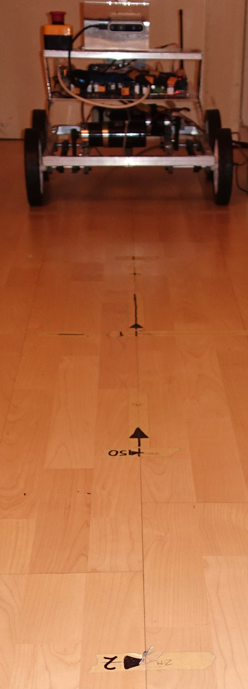

RealSense Calibrator - Setting up for calibration
It is strongly recommended that you read this document in its entirety before starting.
The calibration procedure consists of presenting a fairly large target (about A2-size) to the camera
at several known distances between 500mm and 2.5 metres. You can do this by fixing the camera and moving the
target, as described below. Similarly, the target can be fixed, e.g. on a door, and the camera moved to the known distances.
The setup should take 15-60 minutes according to your chosen method and what you have at hand.
-
Mount the RealSense camera on something rigid, facing horizontally, at least 300mm above the floor.
-
The calibration process consists of measuring the depths (ranges) to targets at known distances: 1 metre, 1m50, 2m, 2m5, etc.
To ease this process, it will be useful to mark off these distances from a known starting point.
The simplest is to put strips of masking tape on the floor and draw a line for each distance,
starting with zero directly underneath the camera's front glass:

Make sure these marks are aligned to a straight line on the floor away from the zero mark
(it's helpful to do this on parquet flooring). Notice the arrow-heads drawn with a thick felt-tip,
to make them easier to see in the camera view.
-
Print 5 copies of target10.png (in UI\Help).
Do NOT scale when printing.
Make sure the green circles are 100mm in diameter (and the red circles 60mm).
-
Cut off the excess paper so that the 5 targets look like this:
-
Get a flat, rigid piece of wood or plastic, about 750x500mm (width about 1.7 times the height).
The exact dimensions are unimportant; the width and height are parameters for the calibration.
What is really important is that geometry is accurate: perfect right-angles, etc.
-
Draw a rectangle 630x380mm, making the lines extend at least 100mm outside the rectangle.
Measure the diagonals to ensure they are equal.
Draw vertical and horizontal centre lines.
-
Stick the 5 targets with their centres carefully aligned to the lines.
You should now have something like this:
-
Make a frame to hold this plane vertically:
Such the middle target's centre is approximately at the height of the camera:
Up: Home
Next: Performing your first calibration